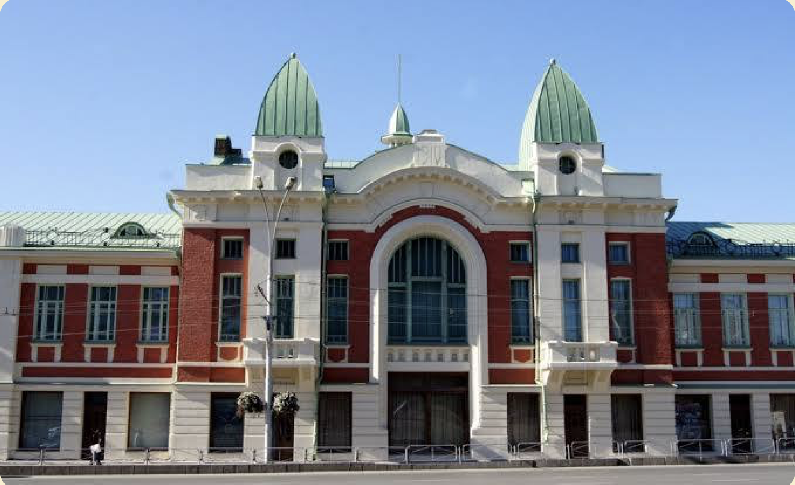
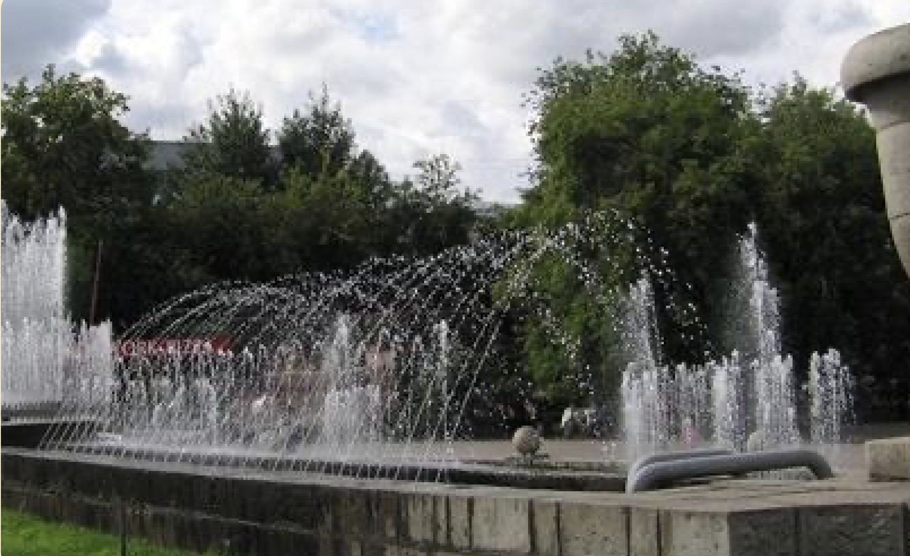

Сердце Сибири –
Площадь Ленина и НОВАТ
Протяженность: 1,5 км
Количество лестниц: 3
Особенности:
- Наличие пешеходных зон
- Наличие общественных туалетов
Ключевые места
Новосибирский театр оперы и балета (НОВАТ)
Это визитная карточка города и его главная гордость.

Краеведческий музей
Глубокое изучение истории региона.

Первомайский сквер
Уютный зеленый уголок рядом с шумом центра.